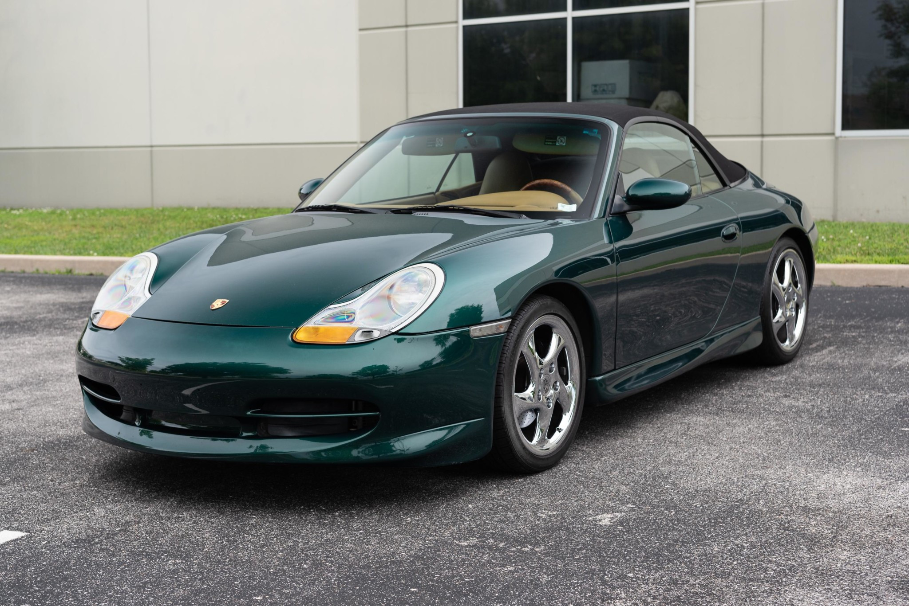
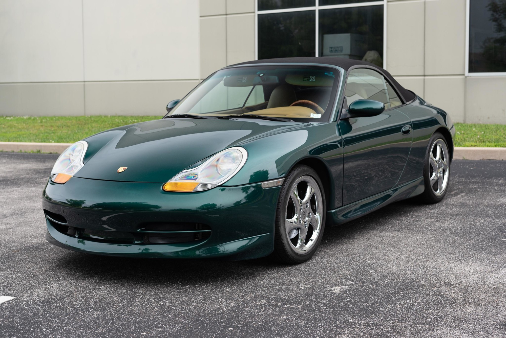

Generációk bemutatása
Az eredeti 911(1963-1973)
Az első 911-es modell a 356-os modell nagyobb illetve praktikusabb változata. Nagyon hamar megnyerte az autórajongók szívét. Az autóba mindössze egy 2.0 literes hathengeres motor volt amihez 130 lóerő társult.
- Gyártott járművek száma: 81.100
- Jelenlegi ára: 340.000 euro
- Bővebb információk az autóról
A G széria (1973-1989)
A G szériás 911 volt a leghosszabb ideig gyártott 911 változat. Az autót meglehetett vásárolni 2.7 literes motorral és a Turbo változatot 3.3 literes motorral. Az alapmodell 231 lóerőt tudott, míg a Turbo változat 300-at.
- Gyártott járművek száma: 198.000
- Jelenlegi ára: 226.000 euro
- Bővebb információk az autóról
964 (1989-1994)
Itt jelent meg először az összkerékhajtás, az ABS és a légzsák. Dizájn szempontjából ezt tartották a legkevésbé vonzó 911-esnek. Az autóba egy 3.3 literes illetve később egy 3.6 literes lapos motor kapott helyet ami 360 lóerőre volt képes. A kevés gyártott példány miatt hatalmas a kereslet rá a gyűjtők körébe.
- Gyártott járművek száma: 74.000
- Jelenlegi ára: 141.000 euro
- Bővebb információk az autóról
993 (1994-1998)
Itt jelent meg először a duplaturbós motor illetve ez volt az utolsó léghűtéses motor. Az autóba egy 3.6 literes motor volt ami 247 lóerőre volt képes.
- Gyártott járművek száma: 67.500
- Jelenlegi ára: 257.000 euro
- Bővebb információk az autóról
996 (1998-2004)
Az első széria amibe megjelent a vízhűtés. Az autóba egy 3.6 literes motor volt található ami 300 lóerőre volt képes. Ebbe a generációba jelent meg először a facelift. Az autónak fejlesztették a belterét illetve a külső megjelenését. Ez a modell 996.2 névre hallgatott.
- Gyártott járművek száma: 179.000
- Jelenlegi ára: 35.000 - 100.000 euro
- Bővebb információk az autóról
997 (2004-2011)
Ebben a generációban is volt facelift. Az autóba megtalálható volt egy 3.6 literes 325 lóerős motor és az S változatba egy 3.8 literes 355 lóerős motor kapott helyet. Eddigre a 911-es család már 24 modellvariációba volt megvásárolható.
- Gyártott járművek száma: 215.000
- Jelenlegi ára: 50.000 - 100.000 euro
- Bővebb információk az autóról
991 (2011-2018)
Ebbe a generációba jelent meg az elektromos kormányzás. A Carrera modellváltozatok mostmár 3.0 literes motorral voltak kaphatóak. A 911 ebben az időszakban érte el az egymillió eladott példányt.
- Gyártott járművek száma: 233.000
- Jelenlegi ára: 120.000 - 445.000 euro
- Bővebb információk az autóról
992 (2018-napjainkig)
Nagy változás nem történt a 991-es generációhoz képest, a motor megmaradt illetve a dizájn is nagyjából ugyanaz. Egyedül a hátsó lámpánál történt látható változás.
- Gyártott járművek száma: Pontos szám nem ismert
- Jelenlegi ára: 124.000 - 277.000 euro
- Bővebb információk az autóról